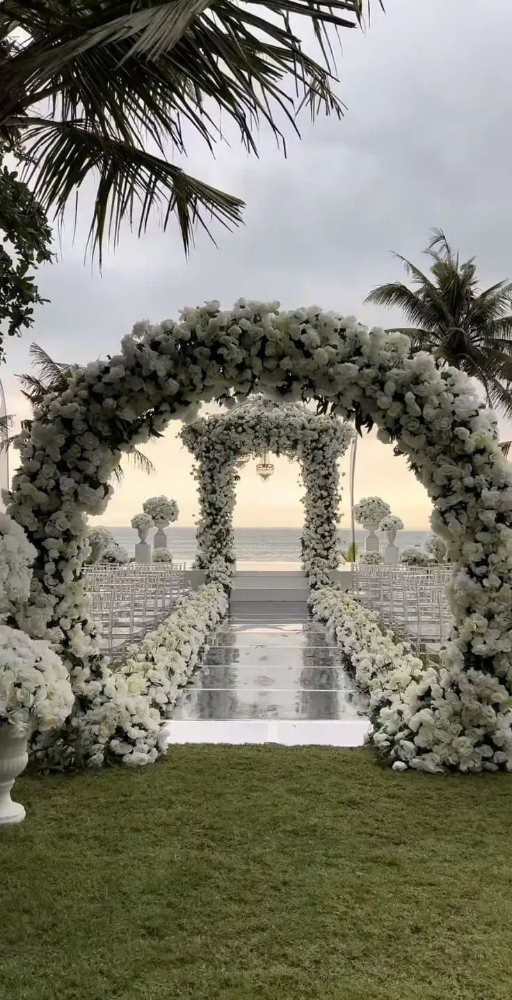
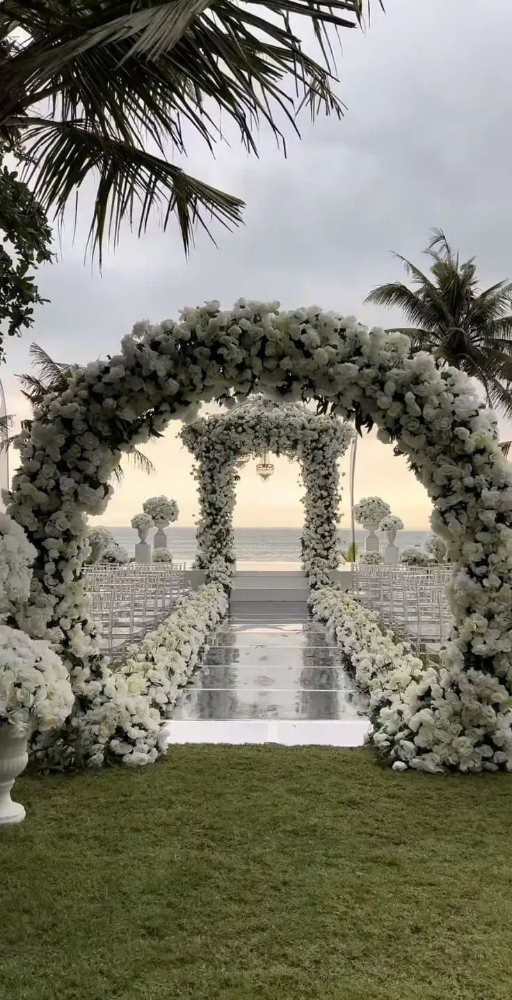

Experience the best event planing management company in kenya
Elegant. Creative. Exceptional Memories.White Cotton Event Planners is an event planning and management company based in Nairobi Kenya that specializes in conceptualizing, creating, and executing memorable events for both private and corporate clients. We have well-experienced personnel in event management to ensure everything runs smoothly and stays in perfect order from start to finish. Our dedicated team takes pride in transforming ideas into stunning realities whether it’s an elegant wedding, a vibrant birthday celebration, or a professional corporate function. We handle every detail with precision, from venue selection and décor to entertainment, logistics, and on-site coordination. With a strong focus on creativity, professionalism, and guest experience, we make sure every event is not only beautifully managed but also safe, secure, and truly unforgettable. At White Cotton, your vision is our blueprint and we’re here to bring it to life with passion and perfection.
At White Cotton Event Planners, our strength lies in our seasoned team of professionals who bring years of hands-on experience to the table. From elegant weddings to vibrant parties and high-level corporate events, we’ve successfully managed and delivered memorable moments for a wide range of clients. Whether it’s a grand celebration or an intimate gathering, our planners are trained to handle every aspect from logistics and décor to guest experience. We don’t just plan events we create stories worth remembering.
OURSERVICES
- Corporate Events
With meticulous attention to detail, we deliver experiences that reflect prestige and professionalism.
At White Cotton Event Planners, we specialize in organizing seamless corporate events that reflect your brand’s professionalism and vision. From conferences and product launches to team-building retreats and gala dinners, our experienced team ensures every detail is meticulously planned and executed to leave a lasting impression on your guests..
- weddings
weddings
 

Experience the pinnacle of wedding elegance with White Cotton Event Planners.
Your wedding day should be as fun and joyful as your love story! At White Cotton Event Planners, we make sure every moment sparkles with laughter, happiness, and a little bit of magic. From quirky themes to unforgettable dances and delicious treats, we take care of the planning so you can focus on saying “I do” and celebrating with your favorite people.
- Birthday Parties
Birthdays are all about fun, laughter, and making memories.
At White Cotton Event Planners, we turn birthdays into unforgettable celebrations. Whether it’s a fun-filled kids’ party, a classy milestone celebration, or a surprise bash for a loved one, our team ensures every detail is perfect. From creative themes and vibrant decorations to entertainment, catering, and seamless coordination — we bring your vision to life. Let us handle the planning while you enjoy the joy, laughter, and precious memories with your guests..
- Themed parties

Themed partiesare all about fun, laughter, and making memories.
At White Cotton Event Planners, we turn birthdays into unforgettable celebrations. Whether it’s a fun-filled kids’ party, a classy milestone celebration, or a surprise bash for a loved one, our team ensures every detail is perfect. From creative themes and vibrant decorations to entertainment, catering, and seamless coordination — we bring your vision to life. Let us handle the planning while you enjoy the joy, laughter, and precious memories with your guests..
- Venue Selection And Bookings
come experience one to the best cool location to hold any type of events without any disrtubance and even weather check to ensure more perfection nd completion of your event as planned
At White Cotton Event Planners, we help answer the question where is the right location to have such an event. we ensure that we conduct a checkup of the location before introducing it to our clints.we also consider on the setup and type of the events so that we can ensure the location selected is accomodating for any actvity that might come up in between like fun activites
Essentials steps before we select a venue
Type of the Event
Understanding the Client’s Vision
Set a Budget
Set and Manage the Budget
Research & Shortlist Locations
Maintain a digital portfolio or internal database of venues, organized by category, location, and features..
Venue Capacity & Layout
Evaluate Capacity and Layout.
Negotiate & Finalize the Contract
Read every contract line-by-line. Clarify anything unclear before your client signs.
- Graduation&Milestone Celebration
It's all about apprectiation of the step made or the progress completed..
When planning graduation and milestone celebrations, our goal is to create a meaningful and memorable experience that reflects the achievements being honored. We start by understanding the client's vision—whether they prefer an elegant formal gathering or a vibrant, fun-filled party. We then select a suitable venue, coordinate décor that matches the theme (such as school colors or a personal journey), and organize catering, entertainment, and photo opportunities. Every detail, from customized invitations to a well-timed event program, is carefully planned to celebrate the guest of honor's journey and future aspirations. We also consider adding personal touches like memory boards, video tributes, or themed giveaways to make the celebration truly special and reflective of their accomplishments.
- product launch & Introduction
Product launches and introductions are high-impact events designed to create excitement, attract attention, and generate momentum for a new product or service
Product launches and introductions are high-impact events designed to create excitement, attract attention, and generate momentum for a new product or service. As planners, we approach these events with a focus on brand identity, target audience, and strategic timing. We begin by collaborating with the client to understand the product's unique value and message, then design an event that showcases it in the most compelling way—often through live demonstrations, interactive displays, media coverage, and immersive experiences. We ensure the venue, lighting, audio-visuals, and overall atmosphere align with the brand image. From influencer invitations to press kits and social media integration, every element is tailored to create buzz, drive engagement, and leave a lasting impression on attendees.
- Awards Events
Award-winning events are prestigious occasions that celebrate excellence, recognize achievements, and inspire continued success across various fields.
Award-winning events are prestigious occasions that celebrate excellence, recognize achievements, and inspire continued success across various fields. As event planners, we approach these events with a high level of detail and sophistication to ensure they reflect the honor and prestige of the awards being presented. Planning begins with selecting an elegant venue that fits the tone of the event, followed by designing a glamorous theme, arranging red carpet entries, coordinating stage design, lighting, and sound to enhance the experience. We carefully manage the event flow—from guest arrivals and seating arrangements to the award presentations and entertainment segments—ensuring everything runs smoothly and professionally. Personalized trophies, branded backdrops, media coverage, and high-quality photography are included to capture the essence of the celebration. Our goal is to create an inspiring, memorable event that celebrates the hard work and accomplishments of all honorees.